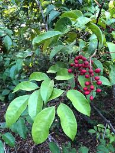

Picramniaceae
The Picramniaceae family is a distinct family of flowering plants placed in its own order, Picramniales, within the Rosid clade. It comprises about 2-3 genera and around 50 species of shrubs and trees native to the Neotropics (tropical Americas). The family is known for the often intensely bitter taste of its bark, leaves, and other tissues, leading to the informal name Bitterbush Family for the largest genus, Picramnia.
Overview
Picramniaceae consists of woody plants, primarily shrubs and small trees, distributed from Mexico and the Caribbean south through Central and South America. The family is characterized by typically alternate, pinnately compound leaves (though simple leaves occur in part of Alvaradoa), small unisexual flowers (plants are usually dioecious), and fruits that are either berries (Picramnia) or clusters of winged samaras (Alvaradoa). A notable feature of many species, especially in Picramnia, is the presence of very bitter compounds (like quassinoids) in the bark and leaves, which likely serves as a defense against herbivores.
Historically, the genera Picramnia and Alvaradoa were often placed in the Simaroubaceae family due to shared characteristics like bitter compounds and compound leaves. However, molecular phylogenetic studies revealed they form a distinct lineage separate from Simaroubaceae and other families, leading to the establishment of the Picramniaceae family and its own order, Picramniales. This order represents an early diverging branch relative to the large Malvid clade of Rosids.
Some species have traditional uses in local medicine, often related to their bitter properties.
Quick Facts
- Scientific Name: Picramniaceae
- Common Name: Bitterbush Family (informal)
- Number of Genera: Approximately 2-3 (Picramnia, Alvaradoa, sometimes Nothotalisia)
- Number of Species: Approximately 50
- Distribution: Neotropics (Mexico, Central America, South America, Caribbean)
- Evolutionary Group: Eudicots - Rosids - Picramniales
Key Characteristics
Growth Form and Habit
Plants are shrubs or small to medium-sized trees.
Leaves
Leaves are usually alternate and typically pinnately compound (odd- or even-pinnate), though simple leaves occur in some Alvaradoa. Leaflets have entire margins. Stipules are generally absent or small and inconspicuous. Bark, leaves, and other tissues are often intensely bitter to taste.
Inflorescence
Flowers are arranged in axillary or terminal panicles, racemes, or thyrses (branched cymose clusters). Inflorescences are often pendant (hanging).
Flowers
Flowers are small, actinomorphic (radially symmetrical), and typically unisexual, with plants usually being dioecious (separate male and female individuals). Key features include:
- Perianth: Usually consists of a single whorl of (3-)4-5 small, free or basally fused, sepal-like segments (tepals or sepals).
- Petals: Usually absent. If present (rarely), they are (3-)4-5, small, and free.
- Androecium (Male Flowers): Features (3-)4-5 stamens, alternating with the sepals/tepals. Filaments are free. A rudimentary ovary (pistillode) is often present.
- Gynoecium (Female Flowers): Staminodes (sterile stamens) may be present. Features a superior ovary composed of 2-3(-4) fused carpels. The ovary is typically 2-3-locular with 1-2 ovules per locule on axile placentas. There are 2-3 styles, which are free or fused only at the base and often recurved. A nectar disc is usually absent or poorly developed.
Fruits and Seeds
The fruit type is variable between the main genera:
- Picramnia: Fruit is typically a fleshy berry, often ripening red or blackish.
- Alvaradoa: Fruit is a cluster of dry, winged samaras.
Seeds number 1 to few per fruit.
Chemical Characteristics
The family is well known for producing intensely bitter compounds, including quassinoids (similar to those in Simaroubaceae) and various alkaloids. These compounds contribute to the traditional medicinal uses of some species (e.g., as febrifuges or tonics) and likely provide chemical defense.
Field Identification
Identifying Picramniaceae in the Neotropics involves recognizing their woody habit, compound leaves, and often bitter taste, combined with floral and fruit details:
Primary Identification Features
- Habit: Shrubs or trees.
- Leaves: Usually alternate and pinnately compound (check for simple leaves in Alvaradoa).
- Taste: Bark and/or leaves often intensely bitter (use caution if tasting).
- Sexual System: Plants usually dioecious (separate male/female individuals).
- Flowers: Small, unisexual, petals usually absent, with (3-)4-5 sepals/tepals and (3-)4-5 stamens (in male flowers).
- Ovary: Superior, 2-3 carpellate.
- Fruit: Either a berry (Picramnia) or a cluster of winged samaras (Alvaradoa).
- Location: Found in the Neotropics.
Secondary Identification Features
- Inflorescences often pendant racemes or panicles.
- Stipules usually absent.
Seasonal Identification Tips
- Flowering and fruiting times vary by species and region.
- The distinctive fruits (berries or samaras) are key identification aids when present.
- The bitter taste can be checked (cautiously) year-round on bark or leaves.
Common Confusion Points
Distinguishing Picramniaceae from other Neotropical families with compound leaves:
- Fabaceae (Legume Family): Often have conspicuous stipules, distinct flower types (e.g., papilionaceous), and fruit is a legume (pod).
- Sapindaceae (Soapberry Family): Highly diverse; leaves sometimes opposite, leaflet margins often toothed/lobed, flowers often slightly zygomorphic, fruit often a capsule or schizocarp. Generally not intensely bitter like Picramniaceae.
- Simaroubaceae (Quassia Family): Also often bitter and with compound leaves, but flowers usually have petals, distinct nectar disc, and fruit is typically a schizocarp of druplets or samaras (structure differs from Alvaradoa).
- Anacardiaceae (Cashew Family): Often resinous (causing allergic reactions in some), flowers usually have petals and a prominent nectar disc, fruit is typically a drupe.
- The combination of alternate compound leaves, dioecy, lack of petals, specific flower formula, bitter taste, and berry/samara fruit type helps define Picramniaceae.
Field Guide Quick Reference (Picramniaceae)
Look For (in Neotropics):
- Shrub or tree
- Leaves: Usually alternate, pinnately compound
- Often intensely bitter taste
- Dioecious (separate M/F plants)
- Flowers: Small, unisexual, petals usually absent
- Sepals/Tepals: (3-)4-5
- Stamens: (3-)4-5
- Ovary: Superior, 2-3 carpels
- Fruit: Berry (Picramnia) or Samaras (Alvaradoa)
Key Distinctions:
- Bitter taste + compound leaves
- Lack of petals (usually)
- Dioecious habit
- Distinct fruit types (berry or samaras)
- Different from Fabaceae (stipules, flower, fruit)
- Different from Sapindaceae (taste, flower, fruit)
- Different from Simaroubaceae (petals, disc, fruit structure)
Notable Examples
The family primarily consists of two main genera:

Picramnia spp.
Bitterbushes
The largest genus in the family (~40 species), comprising shrubs and small trees found throughout the Neotropics. They typically have alternate, pinnately compound leaves and are known for their intensely bitter bark and leaves. They produce small flowers in pendant racemes or panicles, followed by fleshy berries that ripen red or black.

Alvaradoa spp.
Mexican Alvaradoa
A smaller genus (~5 species) of shrubs or small trees found from Mexico and the Caribbean to South America. Some species have pinnately compound leaves, while others have simple leaves. They are most easily recognized by their distinctive fruits, which are clusters of reddish, hairy, winged samaras borne in pendant racemes.
Phylogeny and Classification
Picramniaceae is unique in that it is the sole family within the order Picramniales. This order is placed within the Rosid clade of eudicots. Molecular phylogenetic studies have robustly supported the placement of Picramniales as the sister group to the large Malvid clade (also known as eurosids II).
This means Picramniaceae represents an early diverging lineage relative to the massive radiation of orders within the Malvids, such as Malvales (mallows, cotton), Brassicales (mustards, cabbages), Sapindales (maples, cashews), and Huerteales. Its isolated position highlights a deep split within the Rosids and makes Picramniaceae crucial for understanding the evolutionary history and ancestral characteristics of the Malvid lineage.
The establishment of the order Picramniales resolved the long-standing uncertainty regarding the placement of Picramnia and Alvaradoa, which share some superficial similarities with families like Simaroubaceae but are not closely related.
Position in Plant Phylogeny
- Kingdom: Plantae
- Clade: Angiosperms (Flowering plants)
- Clade: Eudicots
- Clade: Rosids
- Order: Picramniales
- Family: Picramniaceae
- (Note: Picramniales is sister to the Malvid clade within Rosids)
Evolutionary Significance
Picramniaceae is evolutionarily significant because:
- It constitutes its own small, isolated order (Picramniales), representing an early diverging lineage within the Rosids.
- Its position as sister to the Malvids provides a key reference point for understanding the origin and diversification of this major clade (eurosids II).
- Its unique combination of morphological features (compound leaves, bitterness, apetalous unisexual flowers, fruit types) offers clues about ancestral states and evolutionary pathways within Rosids.
- Its strictly Neotropical distribution contributes to understanding the biogeographic history of Rosids.